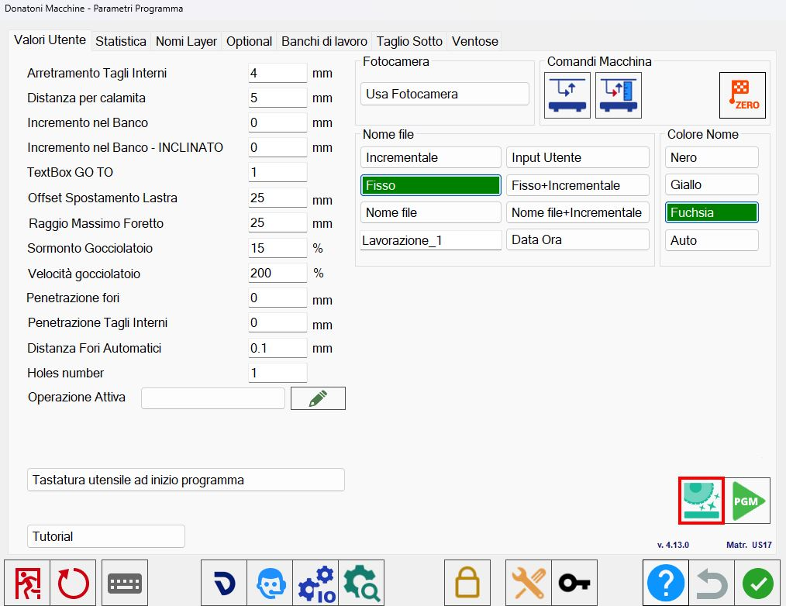

Al iniciar el ciclo de reavivado de herramienta, se procede al reavivado de la misma.
/0.1-20250717-061842.png)
Botón
/16-20250319-103436.png) | Ciclo de reavivado de herramienta |
|---|
Reavivar herramienta desde la página de parámetros
Al acceder a la sección de parámetros de Parametrix se mostrará la siguiente ventana:

Al hacer clic en el icono resaltado en rojo en la imagen anterior, se abrirá una ventana similar a la mostrada a continuación:
/1.5-20250630-064530.png)
Desde esta ventana se pueden establecer los siguientes parámetros para el reavivado de la herramienta.
Parámetros
/1.6-20250630-090945.png) | Incremento de penetración |
/1.7-20250630-091128.png) | Pasadas por pasos |
/1.8-20250630-091254.png) | Velocidad de penetración |
/1.9-20250630-091404.png) | Velocidad hacia delante |
Reiniciar ciclo | |
/1.2-20250630-090234.png) | Anchura |
/1.3-20250630-090126.png) | Altura |
/1.1-20250630-090343.png) | Espesor |
Reavivar herramienta desde el panel de mandos manuales
Desde el panel de mandos manuales es posible realizar el reavivado de la herramienta.
Al hacer clic en el icono resaltado en rojo en la figura inferior, se mostrará un cuadro de diálogo que permite iniciar o cancelar el procedimiento.
/1.1-20250630-072235.png)
Reavivar herramienta en la ventana de Gestión de cortes
Al acceder a esta ventana se mostrará una pantalla similar a la siguiente:
/1.0-20250630-072455.png)
Para añadir un reavivado de herramienta antes de un corte, seleccione el corte deseado de la lista y haga clic en el botón resaltado en rojo en la imagen anterior.
Como se muestra en la imagen siguiente, se ha configurado un reavivado de herramienta que debe realizarse antes del primer corte.
/Screenshot_2025-06-27_154927-20250627-135019.png)